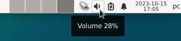
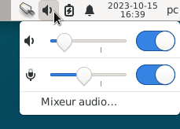
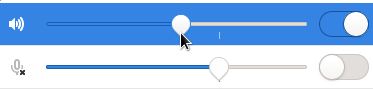
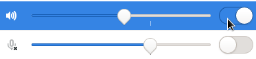
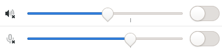
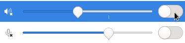
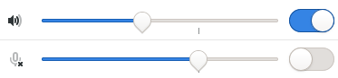
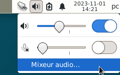
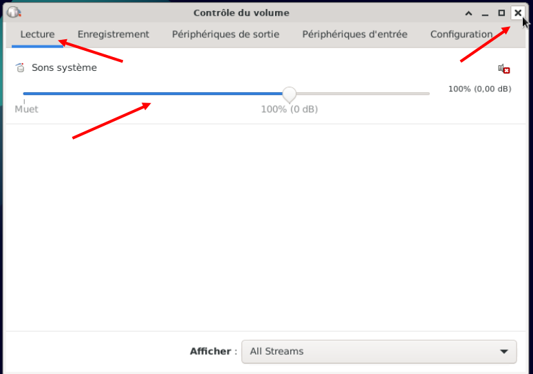

GLICD
Le son :
Le son est géré par le serveur
PulseAudio
- Augmenter ou diminuer le volume
- Rendre muet le son
- Activer le son
- Ouvrir l'application contrôle du volume Pulseaudio
- Augmenter ou diminuer le volume
- Positionner le pointeur de la souris sur l'icône du haut parleur
Une notification apparaît en indiquant un volume à 28% (dans cet exemple)

- Simple clic sur l'icône, une fenêtre apparaît permettant le réglage du volume et du micro.
Sur un PC fixe, connecter des hauts parleurs pour PC, sur la prise Jack verte.

- Changer le volume :
Placer le pointeur de la souris comme sur la photo ci-dessous
Maintenir appuyé le bouton gauche de la souris et faire glisser la souris soit vers la gauche ou la droite
Seconde solution : Simple clic > à gauche ou à droite du curseur
Le volume doit augmenter ou diminuer

- Rendre muet le son
- Placer le pointeur de la souris comme sur la photo ci-dessous > simple clic

- Le curseur devient gris. Il n'est plus bleu.
Une croix est apparue dans l'icône du haut parleur.
Le son est donc muet.

- Activer le son
- Placer le pointeur de la souris comme sur la photo ci-dessous > simple clic

- Dans cet exemple :
Le son est activé et le micro est muet.

- Ouvrir l'application contrôle du volume Pulseaudio
- Simple clic sur l'icône du haut parleur
- Simple clic > Mixeur audio

- L'application s'ouvre
Simple clic > Lecture (souligné en bleu)
Simple clic sur la barre bleue pour augmenter ou diminuer le volume.

- Fermer le contrôle du volume : Simple clic > petite croix en haut à droite.
Ou simple clic sur l'icône en haut à gauche une fenêtre s'ouvre et simple clic > fermer.
Nota : Une autre façon pour ouvrir l'application du contrôle du volume :
Simple clic > Application > Multimédia > Contrôle du volume Pulseaudio

Retour
Informations sur le logiciel libre et
Merci.
Marques déposées :
Ce site ne fait pas partie de Debian, n'est pas produit par le projet
Debian, ni approuvé par le projet Debian.
Ce site n'est pas affilié à Debian. Debian est une marque déposée appartenant
à Software in the Public Interest, Inc.
Contribuer :
Ce site ne fait pas partie de XFCE, n'est pas produit par le projet
XFCE, ni approuvé par le projet XFCE.
Ce site n'est pas affilié à XFCE.
Ce site est juste réalisé par un passionné.